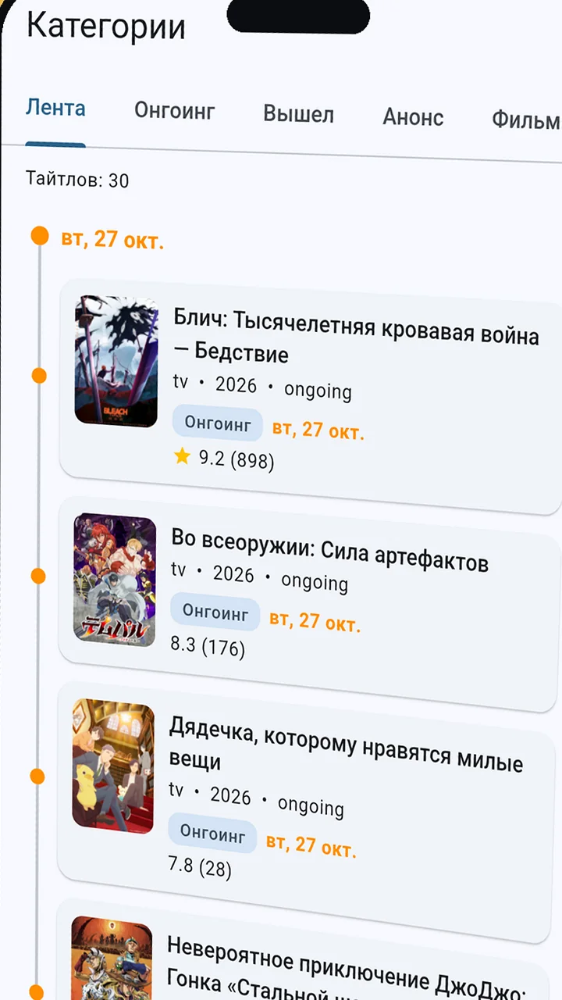
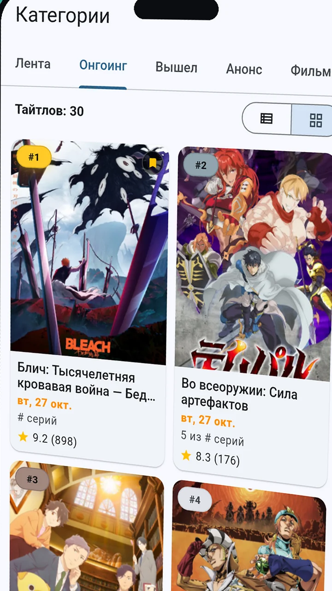
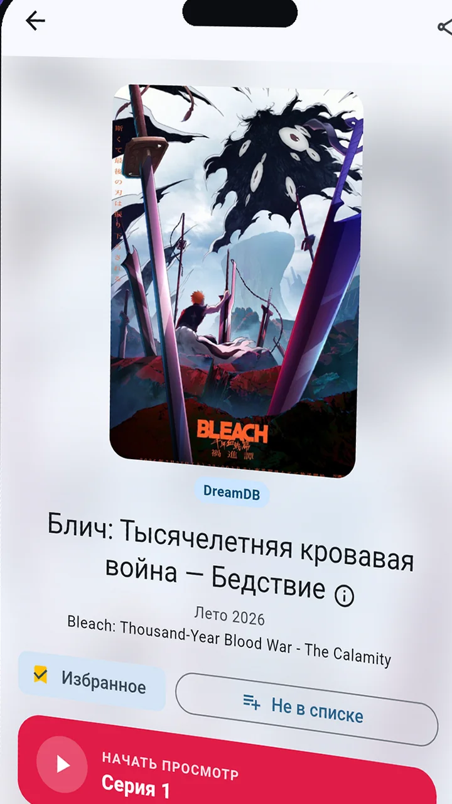
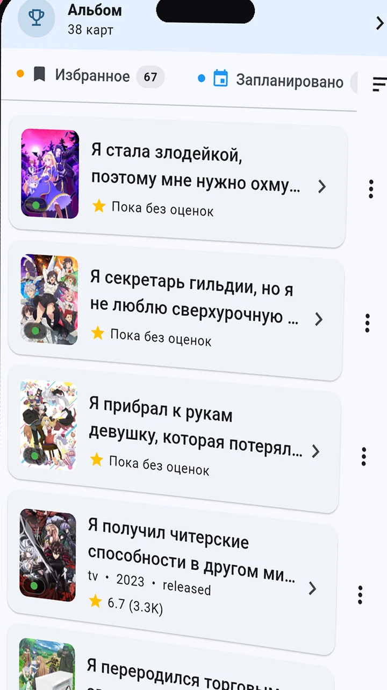
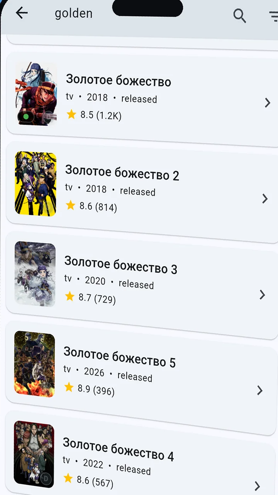

Аниме в твоём кармане
Каталог аниме и дунхуа, расписание серий, рекомендации под твой вкус и плеер с выбором озвучки. Списки, история и настройки остаются на устройстве.
Android 7.0+ · Windows 10/11 · RuStore
Что внутри
Как это выглядит






Всё для твоего аниме-уюта
Рекомендации
Персональная лента подстраивается под то, что ты уже смотришь.
Плеер и озвучки
Выбор озвучки на серию и продолжение с места остановки.
Списки и история
Избранное, смотрю, запланировано, просмотрено, отложено, брошено — плюс статистика серий и часов.
Скачивание серий
Сохраняй серии заранее и смотри без интернета.
Расписание
Выход новых серий любимых тайтлов по дням недели.
Коллекция карточек
Собирай карточки тайтлов — от обычных до золотых.
Обмен по Wi-Fi
Переноси список и скачанные серии между своими устройствами в локальной сети — без облака.
Темы и языки
Светлая и тёмная темы, русский и английский интерфейс.
Скачай сейчас — это бесплатно
Выбери удобный способ. Прямая загрузка ведёт на пошаговую инструкцию с картинками — справится даже котик.
 Наведи камеру телефона — откроется инструкция по установке
Наведи камеру телефона — откроется инструкция по установке
Популярное на этой неделе
Частые вопросы
Что умеет приложение?
Aniplace — каталог аниме и дунхуа с расписанием серий, рекомендациями, списками просмотра, историей и статистикой, скачиванием серий и плеером с выбором озвучки. Интерфейс — русский и английский, темы — светлая и тёмная.
На каких платформах доступно?
Android-смартфоны, планшеты и ТВ (Android 7.0+) и Windows 10/11. В RuStore открыта страница приложения — обновляться удобнее всего через магазин. Версии для iPhone и iPad нет.
Это бесплатно?
Да. Приложение бесплатное, без подписок и встроенных покупок.
Нужен ли аккаунт?
Нет. Регистрации нет: списки, история, настройки и скачанные серии хранятся на твоём устройстве. Перенести их на другое устройство можно по Wi-Fi через встроенный обмен (приложение → Настройки → Обмен по Wi-Fi).
Почему нет Google Play?
Мы распространяем приложение напрямую и через RuStore, чтобы быстрее выпускать обновления. Установка занимает пару минут — смотри пошаговую инструкцию.
Это безопасно?
Да. Сверяй SHA-256 суммы из раздела релиза на GitHub — так ты убедишься, что файл не подменили и он скачался целиком.